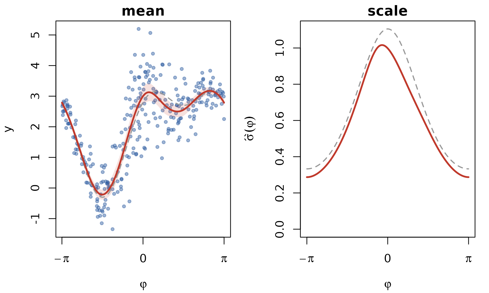
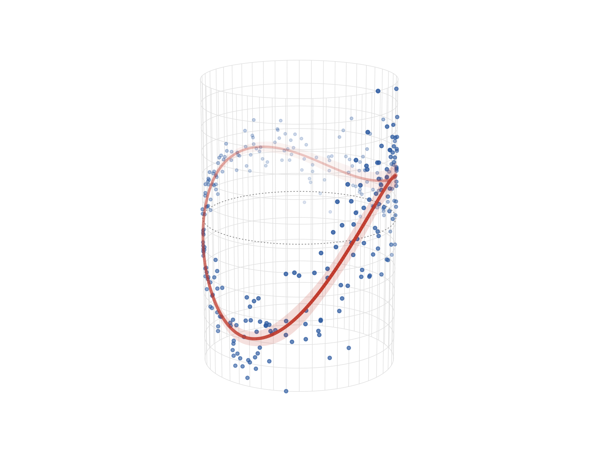

Linear–circular regression on the cylinder
Source:vignettes/articles/linear-circular-regression.Rmd
linear-circular-regression.RmdOne of three response–predictor geometries: C–L · L–C · C–C.
Linear–circular (L–C) regression has an ordinary real-valued response and a circular covariate — energy demand vs time of day, growth vs season, any “how does the level change around the cycle” question.
An honest note first: this case needs no circlss
family at all. A circular response family is what
circlss adds to mgcv; a circular covariate is
something mgcv already handles natively, with its cyclic spline bases
(bs = "cc" / bs = "cp"). The L–C model is a
plain GAM — this article completes the C–L / L–C / C–C trio and shows
the pattern (and the cylinder picture) precisely so you know where
circlss is and is not needed.
fit distributionally with mgcv’s own gaulss() —
structurally the exact sibling of a
vmlss/pnlss call, two formulas and cyclic
smooths, just with a Gaussian response.
Simulate and fit
library(mgcv)
#> Loading required package: nlme
#> This is mgcv 1.9-4. For overview type '?mgcv'.
set.seed(20260612)
n <- 300
phi <- runif(n, -pi, pi)
m_true <- 2 + 1.5 * sin(phi) + 0.8 * cos(2 * phi)
sd_true <- exp(-0.5 + 0.6 * cos(phi))
dat <- data.frame(y = rnorm(n, m_true, sd_true), phi = phi)
b <- gam(list(y ~ s(phi, bs = "cc", k = 10),
~ s(phi, bs = "cc", k = 10)),
family = gaulss(), data = dat, method = "REML",
knots = list(phi = c(-pi, pi)))
summary(b)
#>
#> Family: gaulss
#> Link function: identity logb
#>
#> Formula:
#> y ~ s(phi, bs = "cc", k = 10)
#> ~s(phi, bs = "cc", k = 10)
#>
#> Parametric coefficients:
#> Estimate Std. Error z value Pr(>|z|)
#> (Intercept) 2.02300 0.03881 52.13 <2e-16 ***
#> (Intercept).1 -0.59110 0.04174 -14.16 <2e-16 ***
#> ---
#> Signif. codes: 0 '***' 0.001 '**' 0.01 '*' 0.05 '.' 0.1 ' ' 1
#>
#> Approximate significance of smooth terms:
#> edf Ref.df Chi.sq p-value
#> s(phi) 7.144 8 1604.6 <2e-16 ***
#> s.1(phi) 3.954 8 119.4 <2e-16 ***
#> ---
#> Signif. codes: 0 '***' 0.001 '**' 0.01 '*' 0.05 '.' 0.1 ' ' 1
#>
#> Deviance explained = 84.5%
#> -REML = 284.64 Scale est. = 1 n = 300(gaulss models the mean and the precision
;
its second fitted column is
,
so
.)
Flat view
Mean curve with its 95% band, plus the heteroscedasticity readout — both periodic, closing seamlessly at :
phig <- seq(-pi, pi, length.out = 400)
pr <- predict(b, newdata = data.frame(phi = phig), se.fit = TRUE)
m_hat <- pr$fit[, 1]
m_lo <- m_hat - 1.96 * pr$se.fit[, 1]
m_hi <- m_hat + 1.96 * pr$se.fit[, 1]
sd_hat <- 1 / predict(b, newdata = data.frame(phi = phig),
type = "response")[, 2]
op <- par(mfrow = c(1, 2), mar = c(4, 4, 1.5, 1))
plot(dat$phi, dat$y, pch = 19, col = adjustcolor("#2c5aa0", 0.45),
cex = 0.6, xlab = expression(varphi), ylab = "y",
main = "mean", axes = FALSE)
axis(1, at = c(-pi, 0, pi), labels = expression(-pi, 0, pi))
axis(2)
box()
polygon(c(phig, rev(phig)), c(m_lo, rev(m_hi)), border = NA,
col = adjustcolor("#c0392b", 0.15))
lines(phig, 2 + 1.5 * sin(phig) + 0.8 * cos(2 * phig),
col = "gray60", lwd = 1.6, lty = 2)
lines(phig, m_hat, col = "#c0392b", lwd = 2.4)
plot(phig, sd_hat, type = "l", col = "#c0392b", lwd = 2.4,
xlab = expression(varphi), ylab = expression(hat(sigma)(varphi)),
main = "scale", axes = FALSE, ylim = range(0, sd_hat, exp(0.1)))
axis(1, at = c(-pi, 0, pi), labels = expression(-pi, 0, pi))
axis(2)
box()
lines(phig, exp(-0.5 + 0.6 * cos(phig)), col = "gray60",
lwd = 1.6, lty = 2)
par(op)The cylinder
For L–C the cylinder stands upright: the circular covariate runs
around the can, the response is the height.
maps to
,
and the fitted mean is a closed loop around the can at varying height,
with its ribbon. Same toolkit as the torus: persp()
for the projection, trans3d() for drawing, depth-fading for
the 3-D cue (the dashed ring sits at the overall mean height):
# view-space depth from the persp transformation matrix
depth3d <- function(x, y, z, pm) {
p <- cbind(x, y, z, 1) %*% pm
p[, 3] / p[, 4]
}
draw_can <- function(dat, m_hat, phig, lo = NULL, hi = NULL,
r = 1, H = 1.5, theta_view = 30, phi_view = 16) {
yl <- range(dat$y, lo, hi)
can_xyz <- function(phi, y) {
h <- (y - yl[1]) / diff(yl) * 2 * H - H
list(x = r * cos(phi), y = r * sin(phi), z = h)
}
op <- par(mar = c(0.2, 0.2, 0.2, 0.2))
on.exit(par(op))
pm <- persp(x = c(-r - 0.3, r + 0.3), y = c(-r - 0.3, r + 0.3),
z = matrix(c(-H, -H, H, H), 2, 2),
zlim = c(-H - 0.3, H + 0.3),
theta = theta_view, phi = phi_view, d = 4,
scale = FALSE, expand = 1,
col = NA, border = NA, box = FALSE, axes = FALSE)
## wireframe: vertical generators + horizontal rings
hd <- seq(yl[1], yl[2], length.out = 40)
for (p in seq(-pi, pi, length.out = 49)[-1]) {
w <- can_xyz(rep(p, length(hd)), hd)
lines(trans3d(w$x, w$y, w$z, pm), col = "gray88", lwd = 0.6)
}
phd <- seq(-pi, pi, length.out = 160)
for (t in seq(yl[1], yl[2], length.out = 13)) {
w <- can_xyz(phd, rep(t, length(phd)))
lines(trans3d(w$x, w$y, w$z, pm), col = "gray88", lwd = 0.6)
}
## reference ring at the overall mean height
w <- can_xyz(phd, rep(mean(dat$y), length(phd)))
lines(trans3d(w$x, w$y, w$z, pm), col = "gray55", lty = 3, lwd = 0.9)
## data on the surface, depth-faded
w <- can_xyz(dat$phi, dat$y)
dp <- depth3d(w$x, w$y, w$z, pm)
a <- 0.15 + 0.7 * (dp - min(dp)) / diff(range(dp))
pt <- trans3d(w$x, w$y, w$z, pm)
ord <- order(dp)
points(pt$x[ord], pt$y[ord], pch = 19,
cex = 0.4 + 0.25 * a[ord],
col = sapply(a[ord], function(ai) adjustcolor("#2c5aa0", ai)))
## 95% ribbon, depth-ordered translucent quads
if (!is.null(lo) && !is.null(hi)) {
K <- 4
i0 <- seq_len(length(phig) - 1)
quads <- list()
for (k in seq_len(K)) {
t0 <- lo + (hi - lo) * (k - 1) / K
t1 <- lo + (hi - lo) * k / K
for (i in i0) {
hh <- c(t0[i], t0[i + 1], t1[i + 1], t1[i])
pp <- c(phig[i], phig[i + 1], phig[i + 1], phig[i])
w <- can_xyz(pp, hh)
quads[[length(quads) + 1]] <-
list(p = trans3d(w$x, w$y, w$z, pm),
d = mean(depth3d(w$x, w$y, w$z, pm)))
}
}
dq <- vapply(quads, `[[`, numeric(1), "d")
aq <- 0.05 + 0.13 * (dq - min(dq)) / diff(range(dq))
for (j in order(dq)) {
polygon(quads[[j]]$p$x, quads[[j]]$p$y, border = NA,
col = adjustcolor("#c0392b", aq[j]))
}
}
## fitted mean curve: a closed loop around the can, depth-painted
w <- can_xyz(phig, m_hat)
dp <- depth3d(w$x, w$y, w$z, pm)
cv <- trans3d(w$x, w$y, w$z, pm)
a <- 0.25 + 0.75 * (dp - min(dp)) / diff(range(dp))
seg <- data.frame(x0 = head(cv$x, -1), y0 = head(cv$y, -1),
x1 = tail(cv$x, -1), y1 = tail(cv$y, -1),
d = head(dp, -1), a = head(a, -1))
seg <- seg[order(seg$d), ]
segments(seg$x0, seg$y0, seg$x1, seg$y1,
col = sapply(seg$a, function(ai) adjustcolor("#c0392b", ai)),
lwd = 2.2 + 1.6 * seg$a, lend = 1)
invisible(pm)
}
draw_can(dat, m_hat, phig, lo = m_lo, hi = m_hi)
The loop closes on itself — that is the cyclic basis doing its job;
an unconstrained s(phi) would let the two ends of the cycle
disagree.
Where circlss picks up
Flip the roles — circular response — and you leave what
plain mgcv ships: that is exactly the gap circlss fills,
with vmlss() and pnlss() general families
whose every parameter gets its own smooth. See the C–L article for the linear
covariate case (and the helix that needs pnlss), and the C–C article for the doubly
circular case on the torus.